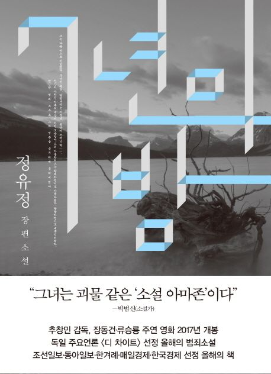

세계문학상 수상 작가 정유정 장편소설
7년의 밤 동안 아버지와 아들에게 일어난 슬프고 신비로우며 통렬한 이야기.
제1회 세계청소년문학상 수상작 『내 인생의 스프링 캠프』, 제5회 세계문학상 수상작 『내 심장을 쏴라』의 작가 정유정의 장편소설.
전작을 통해 치밀한 얼개와 속도감 넘치는 문체, 살아 있는 캐릭터와 적재적소에 터지는 블랙유머까지, 놀라운 문학적 역량을 보이며
문단의 주목을 받기 시작한 작가는 다시 한 번 치밀한 사전 조사와 압도적인 상상력으로 무장한 작품 『7년의 밤』으로 독자들에게 강렬한 인상을 남긴다.
'세령호의 재앙'이라 불리는 사건에서 살아남은 열두 살 서원.
세상은 그에게 '살인마의 아들'이라는 올가미를 덧씌우고,
친척집을 전전하던 끝에 결국 모두에게 버려진 서원은 세령마을에서 한집에서 지냈던 승환을 다시 만나 함께 살기 시작한다.
세령호의 재앙으로부터 7년 후, 세간의 눈을 피해 살던 승환과 서원은 야간 스쿠버다이빙을 하다가 사고를 당한 청년들을 구조하게 되고,
이 일로 세간의 관심을 받게 된 서원은 누군가로부터 한 편의 소설을 배달 받는다.
교통사고를 당한 뒤 누군가에게 목 졸려 죽은 소녀를 둘러싸고 세령마을에서 일어났던 그날 밤의 사건.
서원에게 전해진 소설 『세령호』는 승환이 쓴 것으로, 7년 전 세령호의 재앙을 낱낱이 기록해 사건의 이면에 숨겨져 있던 진실을 이야기한다.
오랜 기간 수면 아래에 잠들어있던 진실은 7년의 시간을 넘어 다시 그 모습을 드러내고, 사실과 진실 사이에서 방황하며
어둠의 시간을 걸어온 존재들은 그 시간을 딛고 서서히 진실의 맨 얼굴과 조우하기 시작한다.
작가는 무거운 과거의 그림자를 지고 살아온 서원과 승환 외에도, 사건에 얽힌 인물들의 각기 다른 면면을 통해 이 시대를 살아가는 다양한 인간군상, 인간의 본질을 밀도 있게 조명한다.
그는 그 특유의 짜릿한 문장과 탄탄한 캐릭터 설정, 물 샐 틈 없는 세계관으로 직조된 이 작품을 통해 숨 가쁜 서사적 카타르시스를 안겨준다.